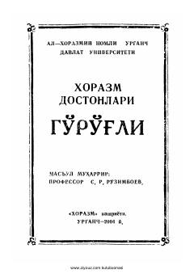

XDXorazm xalq dostonlarining 'Go'g'li' turkumiga bag'ishlangan ilmiy-adabiy nashr.
Ushbu to'plam Xorazm dostonlarining 'Go'g'li' turkumiga bag'ishlangan bo'lib, unda qahramonlik va vatanparvarlik ruhidagi dostonlar jamlangan. Kitobda xalqimizning asrlar davomida shakllangan ma'naviy merosi va baxshichilik san'ati namunalari o'rin olgan.